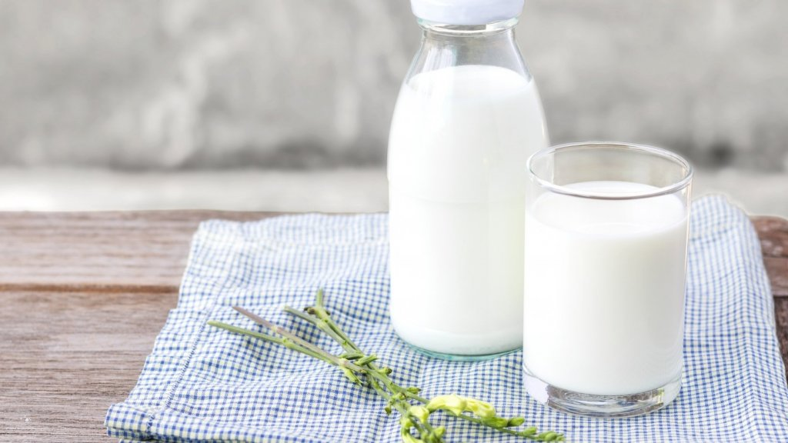

<!DOCTYPE html>
<html lang="en">
   <head>
      <meta charset="UTF-8">
      <title>Glass of Milk</title>
      <link rel="stylesheet" href="../style.css">
   </head>
</html>

<body class="GoM">
   <h1>Glass of Milk</h1>
   
   <h6 class="caption">A Glass of Milk</h6>

   <div class="intro">
      <p>This glass of milk is jam-packed with a whopping 7g of protein! Very easy to make, great for a quick drink.</p>
      <p>Prep time: 1min</p>
      <p>Cooking time: 0min</p>
      <p>Total time: 1min</p>
   </div>

   <h2>Ingredients</h2>
      <ul class="Ingredients">
         <li>Milk</li>
         <li>Glass Cup (optional)</li>
         <li>Straw (optional)</li>
      </ul>

   <h2>Instructions</h2>   
      <ol class="Instructions">
         <li>Place the glass cup on your countertop.</li>
         <li>Pour desired amount of milk into the glass cup
            <p>(chef's note: Milk is a liquid and if you're not careful may spill!)</p>
            </li>
         <li>Serve, and enjoy!
            <p>(optional: add straw to the glass make the drinking experience more fun!)</p>
         </li>
      </ol>
</body>